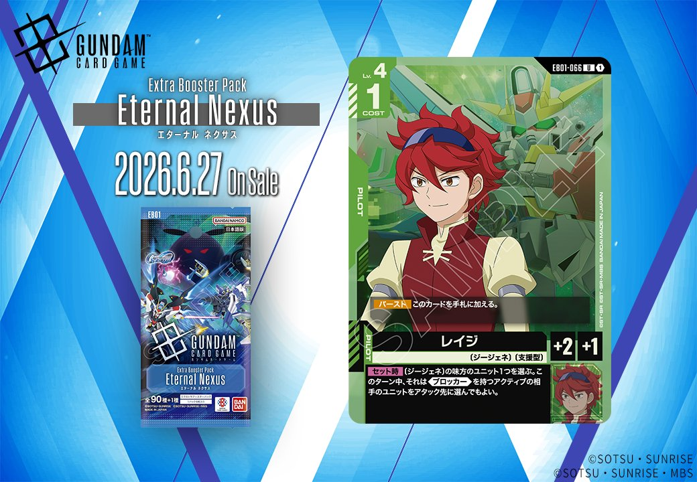

EB01「Eternal Nexus」から、緑のPILOTカード「レイジ」とUNITカード「ビルドストライクガンダム(フルパッケージ)(EX)」の2枚が収録されます。両カードは相互にリンク関係を持ち、レイジは〔ジージェネ〕とのリンクも可能な設計となっています。

レイジ (EB01-066)
| 色 | 緑 | タイプ | PILOT |
| Lv | 4 | コスト | 1 |
| 補正 AP | 2 | 補正 HP | 1 |
| 特徴 | 〔ジージェネ〕、〔支援型〕 | ||
| リンク条件 | 〔ジージェネ〕 | ||
効果: 【バースト】このカードを手札に加える。【セット時】〔ジージェネ〕の味方のユニット1つを選ぶ。このターン中、それは《ブロッカー》を持つアクティブの相手のユニットをアタック先に選んでもよい。
レイジは〔ジージェネ〕特化のサポート型PILOTカード。【セット時】効果により、《ブロッカー》持ちのアクティブユニットを無視して攻撃できるようになるため、相手の防御網を突破する戦術的な一手として機能する。 COST1・AP2という軽量スペックで【バースト】による手札補充も可能なため、〔ジージェネ〕デッキでの採用価値は高く、特に新登場のクィン・マンサやビルドストライクガンダム(フルパッケージ)(EX)との連携が期待できる。

ビルドストライクガンダム(フルパッケージ)(EX) (EB01-021)
| 色 | 緑 | タイプ | UNIT |
| Lv | 2 | コスト | 5 |
| AP | 4 | HP | 4 |
| 特徴 | 〔ジージェネ〕 | ||
| リンク条件 | 「レイジ」 | ||
効果: 《突破(4)》(アタックで相手のユニットを破壊したとき、その相手のシールドエリアの先頭のカード1枚に指定の数ダメージを与える)【セット時】〔ジージェネ〕のパイロット 自分のトラッシュに〔ジージェネ〕のユニットカードが2枚以上あるなら、自分はリソース1つをレストで置く
ビルドストライクガンダム(フルパッケージ)(EX)は、《突破(4)》により相手ユニット撃破後に追加でシールドを4枚削る強力な攻撃性能を持つユニット。【セット時】効果でトラッシュの〔ジージェネ〕が2枚以上あればリソースをレストで追加配置でき、「レイジ」のリンクにも対応。 COST5でAP4/HP4とステータスは標準的だが、突破ダメージの大きさとリソース加速により、〔ジージェネ〕軸の緑デッキで活躍が期待できる。
関連カード
-
 クィン・マンサ (オメガ・サイコミュ起動時)(EB01-024)NEW緑系 — 同色・共通特徴: ジージェネ（新カード）
クィン・マンサ (オメガ・サイコミュ起動時)(EB01-024)NEW緑系 — 同色・共通特徴: ジージェネ（新カード） -
 ビルドストライクガンダム(フルパッケージ)(EX)(EB01-021)NEW緑系 — 同色・共通特徴: ジージェネ（新カード）
ビルドストライクガンダム(フルパッケージ)(EX)(EB01-021)NEW緑系 — 同色・共通特徴: ジージェネ（新カード） -
 ウイングガンダムゼロ(GD01-024)緑系デッキ内採用率18.6% (221デッキ)
ウイングガンダムゼロ(GD01-024)緑系デッキ内採用率18.6% (221デッキ) -
 ウイングガンダム(ST02-001)緑系デッキ内採用率17.8% (212デッキ)
ウイングガンダム(ST02-001)緑系デッキ内採用率17.8% (212デッキ) -
 ヒイロ・ユイ(ST02-010)緑系デッキ内採用率17.7% (211デッキ)
ヒイロ・ユイ(ST02-010)緑系デッキ内採用率17.7% (211デッキ) -

レイジ(EB01-066)NEW緑系 — 同色・共通特徴: ジージェネ（新カード）